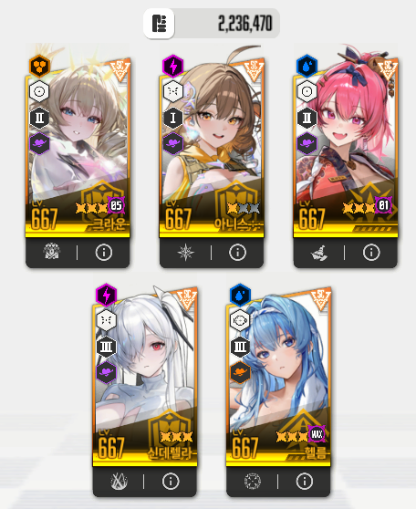
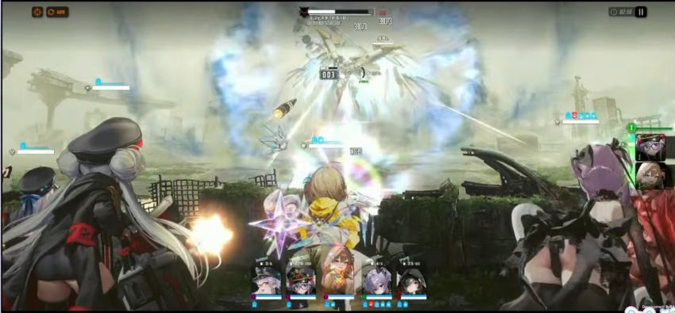
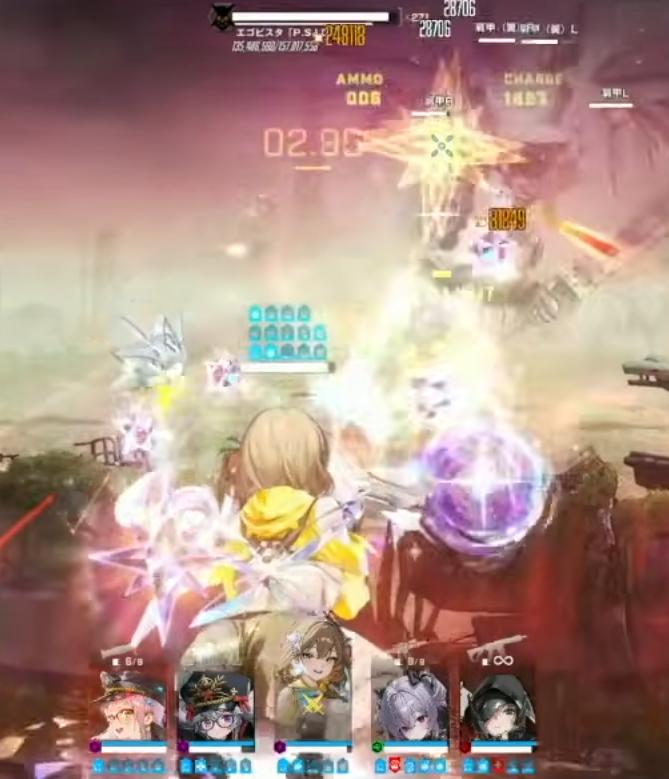
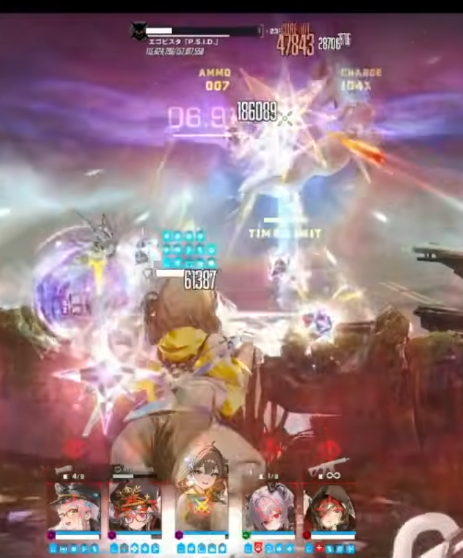
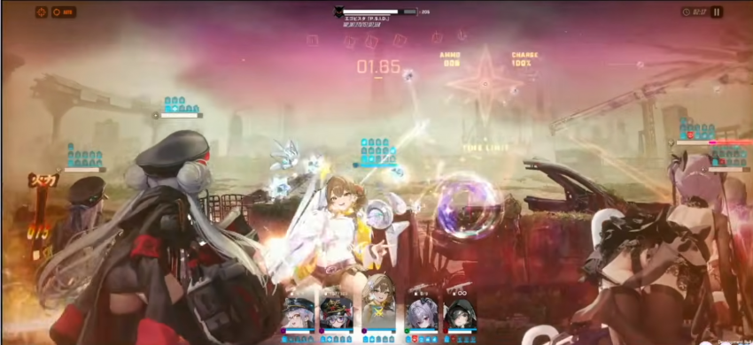
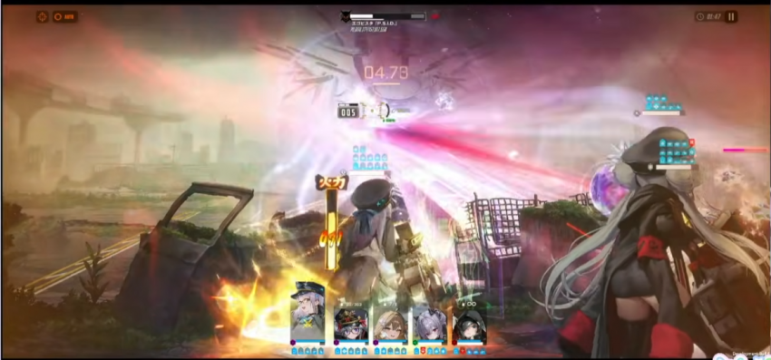
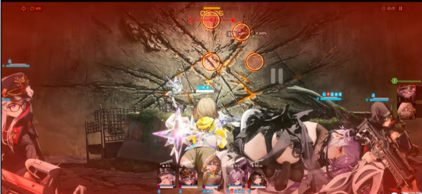
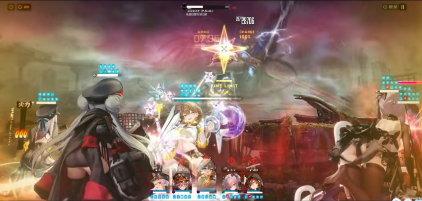
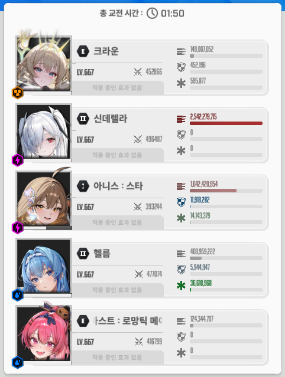

이미 클리어 했는데 공략 요청이 들어와서 공방 시연 영상 짤 가져다가 간략하게 쓸게요
우선 조합은 아니스 크라운 메스트 신데렐라 애헬름으로 갔음

처음엔 패턴 회피 귀찮아서 목단도 넣어 봤는데 2분 5초쯤에 쓰는 전체기를 목단으로도 못버텨서 그 전에 깨려고 메스트 넣고 패턴 피하면서 진행함

2분 56초쯤 3번 타겟으로(방어력 기준인지, 위치 고정인지 모르겠음. 나도 아니스 3번에 넣고 했는데 3번만 타게팅 했음) 참격을 하는데 크라운 쉴드 있어도 한방에 죽으니 개인 엄폐 해주면 됨. 타이밍은 버스트 키고 아니스 평타 3번 쏜 후 엄폐하면 적당히 맞아 떨어졌음

참격 후 랜덤 타겟으로 파란 투사체를 날리는데 이것 또한 다맞으면 골로 가버리니 타겟 확인 후 개인 엄폐 해주면 됨(잘 안보이는데 1번 네오네온 타겟 확인 가능함)
총 2번 연속으로 진행됨

그 후 저렇게 기를 모으다가 아군 전체를 그어 버리는데 크라운 쉴드가 있으면 막아짐. 근데 타이밍 상 앞선 파란 투사체한테 쉴드 벗겨진 후라 전체 엄폐 진행했음

그 후엔 작은 투사체 뿌리고 화면 밖으로 사라짐. 저 투사체는 요격도 되고 어차피 보스는 사라져서 때릴 데가 없으니 요격하고 기다리면 됨.
이 패턴도 총 두번 진행됨
대충 이런 패턴들 반복되다가

아직도 뭔지 모르겠는 저런 공격을 하는데 애헬름 없는 조합에선 아니스가 못버티고 죽었음. 하지만 이 조합은 헬름으로 힐 빵빵해서 그냥 맞딜 하면 됨

그 후 족자저지로 들어가는데 대충 아니스로 쏘다보면 저지되고 혹시 버스트 안쓴 채로 들어와도 아니스가 채워주니까 바로 풀버 써주면 됨
2페 진입 후 1페랑 같은 패턴 반복하다가

2분 조금 넘어서 전체기가 들어오는데 저건 목단 받댐감 키고도 전멸했으니 이 전에 잡아주면 됨

딜 비중은 이정도 나왔삼 아니스 개사기니까 꼭 키우삼